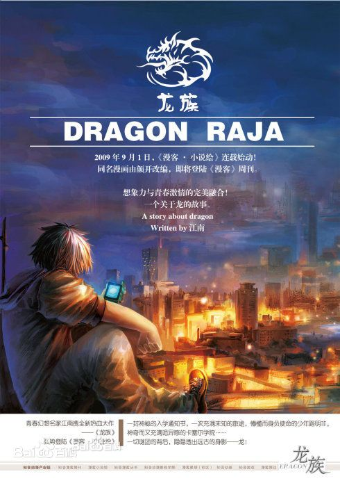
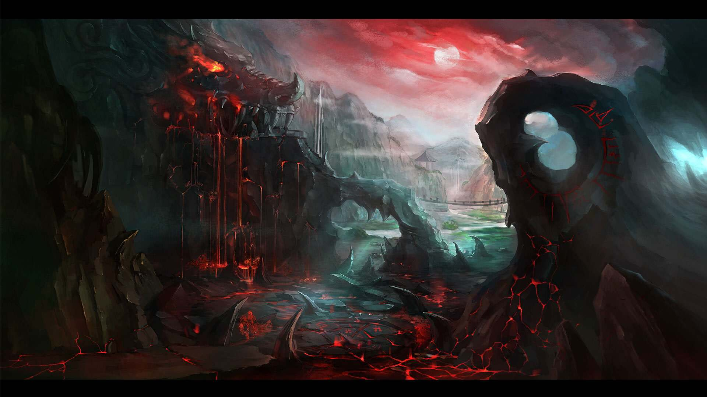
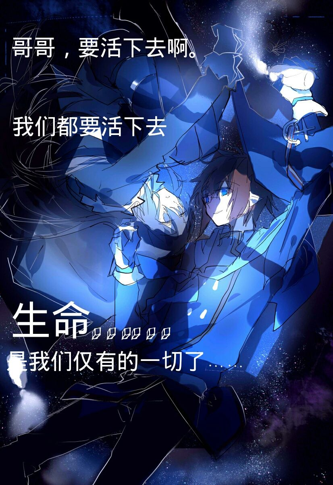
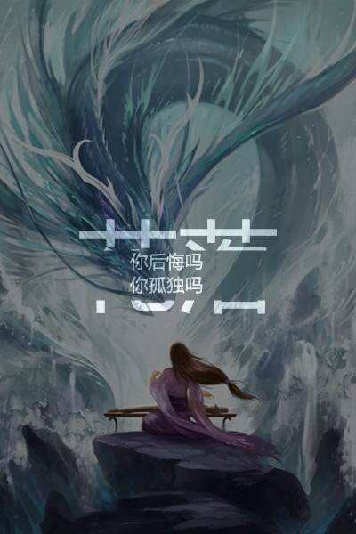
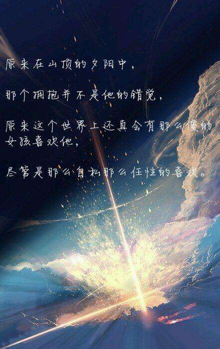
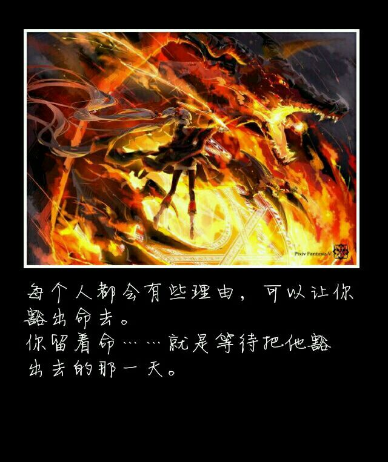

你现在正在看的是李适宇制作的第一个网页，在这里，我推荐一本书分享给大家。现在欢迎来到龙族的世界，在此你将开启传奇之旅

《龙族》是作家江南创作的系列长篇魔幻小说，由《龙族Ⅰ火之晨曦》、《龙族Ⅱ悼亡者之瞳》、《龙族Ⅲ黑月之潮》、《龙族Ⅳ奥丁之渊》，《龙族Ⅴ：悼亡者的归来》组成，2009年10月1日开始在小说绘上连载，第一部于2010年04月首次出版，第二部于2011年05月出版，第三部上篇于2012年12月出版，第三部中篇于2013年07月出版，第三部下篇于2013年12月出版，第四部则于2015年10月出版，第五部于2018年5月15日在QQ阅读平台开始连载 。
作品讲叙了少年路明非在申请国外大学时收到了来自芝加哥远郊处的一所私立大学：卡塞尔学院的邀请函，随着路明非同学坐上去往芝加哥的CC1000次列车，踏上了与龙族争锋的征程。
江南个人更喜欢史诗奇幻。其本人喜欢读历史，看了《魔戒》以后启发了江南写中国化的史诗奇幻的想法。江南觉得中国古代的素材很多，可以写进故事里对写作者的能力也是有要求的。读者发现它和现实有联系，但又和现实中的故事不一样，便有了《龙族》。
史诗奇幻很考验作者的控制力。江南要考虑得很细致，比如物理因素，你要画地图，知道世界怎么分布，海流怎么流，四季变化和阳光变化是怎样的，这就是一个新的创世纪。同时还要考虑宗教、哲学、种族和语言。




| 人物 | 身份 | 言灵 | 血脉 |
|---|---|---|---|
| 路明非 | 主角 | 不要死 | S级 |
| 路明泽 | 路明非的哥哥 | 疑似所有 | 龙王级 |
| 楚子航 | 狮心会会长 | 君焰 | 超A级 |
| 凯撒 | 学生会会长 | 镰鼬 | A级 |
| 昂热 | 卡塞尔学院校长 | 时间零 | S级 |
由小城市走向大洋彼岸，平凡普通的生活突然变得精彩传奇，蔫小孩受到腰细腿长的御姐召唤，变成了日益成长的屠龙勇士。这个，就是《龙族》。而这个蔫主角路明非，其实就是江南内心所向往的生活。 ——沧月，中国青春作家，江南资深契妹，代表作《镜》系列、《羽》系列、《七夜雪》等。
青春小说，从人物到故事，从构思到情感，从文字到感觉，都有着不小的变化。而像《龙族》这种集热血感、青春感、动漫风于一体的小说，算是一个创新。而《龙族》也是江南最具创新突破感的作品。 ——明晓溪，中国青春作家，代表作《烈火如歌》、《泡沫之夏》、《心之萌》等。
《龙族》讲的，其实是一个关于“抗争”的主题，在那个世界里，精英分子在抗争，蔫小孩也在抗争；他们抗争压迫，抗争命运。但是最终却需要回到“热血成长”的主题，因为只有正义的抗争与热血的成长，才是让年轻人或兴奋或思考的理由。请让我们一起热血！ ——蔡骏，中国悬疑作家，代表作《天机》、《人间》、《地狱的第十九层》等。
相比较《龙族Ⅰ》，《龙族Ⅱ》在故事技巧上更为成熟。一部青春幻想热血向的小说，却有着非常快的故事节奏与情节密度。快速切换的镜头，细腻华美的语言，独具匠心的细节，让这部小说拥有极为浓厚的阅读快感。从2010年成都书市出第一部开始，我追看了一年，我喜欢这本书。 ——南派三叔，中国悬疑小说家，代表作《盗墓笔记》等。
《龙族Ⅱ》是一部在人物塑造上非常成功的小说。这些男孩与女孩在这部小说里慢慢地成长，学会了坚强、执著与爱。衰衰的路明非、孤独的楚子航、酷酷的恺撒，当然还有那些漂亮可爱的姑娘们——诺诺、夏弥、苏茜、陈雯雯、酒德麻衣……我和江南是邻居，我们经常在小区里散步讨论这些人物和命运。我也喜欢这本书。 ——唐家三少，中国网络文学作家，代表作《斗罗大陆》、《狂神》等。
远古的神秘降临时尚的现代世界，古老的魔力与先进科技交相辉映，构成了令人惊叹的《龙族》，像初升的朝阳，那么古老，又那么崭新。从来没有想到科幻的神奇与奇幻的绚丽结合得如此完美，青春与热血激荡其间，温婉与雄奇并存，迸发出前所未有的光彩。对于年轻和曾经年轻过的人，这部史诗的魅力不可抗拒。 ——刘慈欣，著名科幻作家，代表作《三体》
青春小说《龙族》中不仅有精彩的冒险故事，还讲述了几个少年的成长。从初出茅庐到逐步走向新的世界，在他们身上展现了正义与勇气、友情与执著、热血与梦想。 ——王泉根，北京师范大学教授、博士生导师，中国儿童文学研究中心主任
